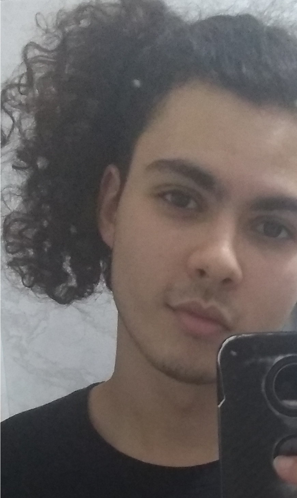

Ingressante no curso Licenciatura em Ciências Naturais e Exatas pela UFABC e Docente Bolsista no Projeto de Extensão PJ064-2020 - "Transformações e horizontes futuros para o Ensino de Ciências da Natureza no contexto da pandemia do Covid-19: Um estudo de seu papel social, conhecimentos abordados e práticas pedagógicas presentes em documentos oficiais e nos relatos de gestoras e professoras de escolas públicas do município de São Paulo e da Grande ABC"
2020 Graduação em andamento: Licenciatura em Ciências Naturais e Exatas.
Universidade Federal do ABC, UFABC
2017-2019 Ensino Médio e Curso Técnico: Química.
Escola Técnica Estadual Lauro Gomes, ETEC-LG
Voz.ogg: Breve Apresentação
ATIVIDADES |
ACESSO |
DATA |
|---|---|---|
| Escolha de Competência para VAI | Download | 06/10 |
| Quero Saber Mais de Mim | Download | 06/10 |
| Qual O Valor | Download | 15/10 |
| Resumo: Rethinking The Virtual | Em andamento | --/-- |
| Hoje Estou Assim | Download | 22/10 |
| O Professor Que Eu Quero Ser | Download | 22/10 |
| Análise Individual da VAI | Download | 05/11 |
ESQUETES E RASCUNHOS |
ACESSO |
DATA |
|---|---|---|
| Rascunho de Mapa Mental para VAI | Download | 13/10 |
| Rascunho de Script para VAI | Download | 19/10 |
| Mapa Mental: Professor Ideal | Abrir.png | 22/10 |
| Mapa Mental: Análise Individual da VAI | Abrir.png | 05/11 |